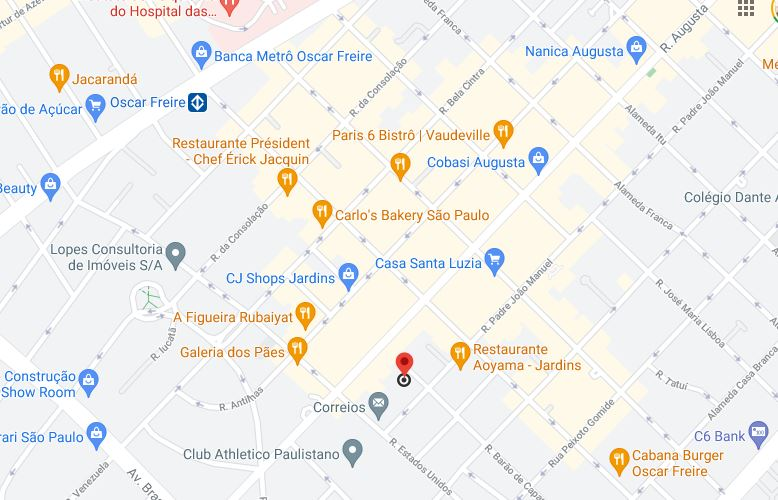

Como chegar
O acesso ao local pode ser feito pelo Rua Augusta. A região contém diversas opções de lojas e galerias. Endereço: R. Barão de Capanema, 549 - Jardins, São Paulo - SP, 01411-011
Veja o que estão comentando sobre esse local
Clara M.
A decoração do local é um grande atrativo além dos pratos exclusivos.
Júlio L.
Experimentei ingredientes que não conhecia. Com certeza, eu volto.
Luiz G.
O atendimento é excepcional e a comida é excelente.